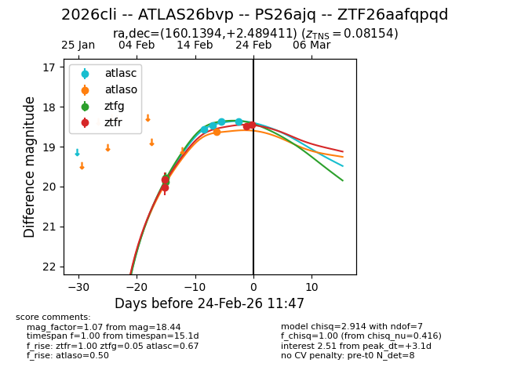
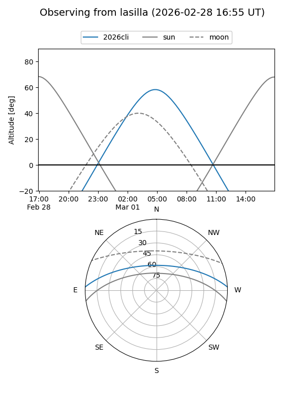
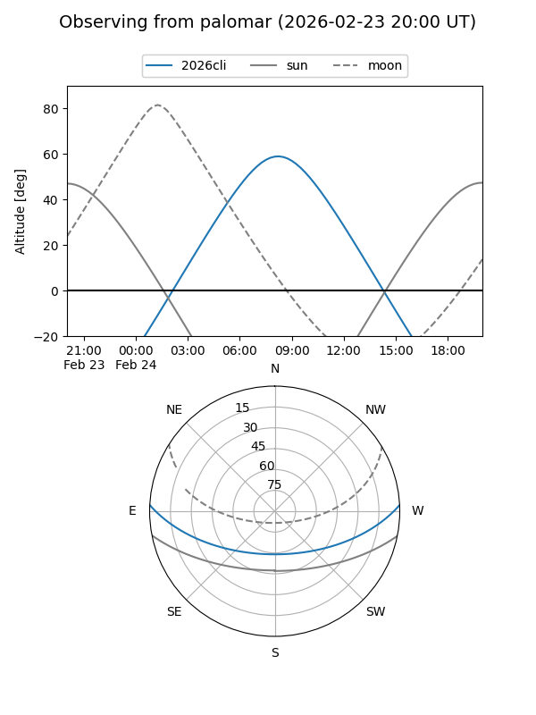
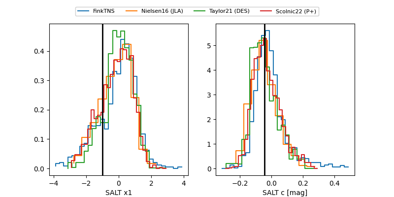

2026cli
Target 2026cli at 2026-02-24 11:48
Aliases and brokers:
FINK: link
Lasair: link
ALeRCE: link
TNS: link
YSE: link
alt names
ZTF26aafqpqd (ztf,fink_ztf)
2026cli (tns,yse)
ATLAS26bvp (atlas)
PS26ajq (panstarrs)
Coordinates:
equatorial (ra, dec) = 160.1394,+2.48941
equatorial (HMS+DMS) = 10:40:33.46,+02:29:21.88
galactic (l, b) = (245.4754,+50.16256)
Flags:
confirmed ia
Photometry:
last atlasc=18.38, atlaso=18.63, ztfg=19.89, ztfr=18.44
4 atlasc, 1 atlaso, 2 ztfg, 4 ztfr detections
Lightcurve

Visibility


Additional plots
